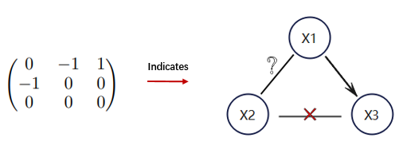
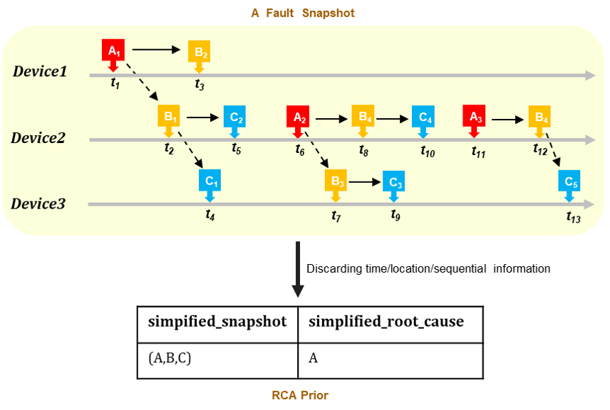

overview
In this competition, the goal is to solve a causal structure learning problem in AIOps (Artificial Intelligence for IT Operations). In telecommunication networks, anomalies are commonly identified through alarms. The network operators might be facing millions of alarms per day due to the large scale and the interrelated structure of the network, as a single fault in the network can trigger a flood of various types of alarms on multiple connected devices. The goal of the operators is to quickly localize the failure point to facilitate a fast repair and recovery. However, to handle all these alarms is exhausting and can quickly overwhelm the operators, and hence it must be done in an intelligent. Recently, there has been increasing interest in tackling the above root cause analysis (RCA) problem from a causal perspective, i.e., learning a causal graph that represents alarm relations and then using decision-making techniques (such as causal effect estimation and counterfactual inference) to efficiently identify the root cause alarm when a fault occurs. A typical RCA solution for the telecommunication network is depicted in Figure 1.
The competition task can be described as follows: Given a series of datasets, for each dataset, participants are supposed to use the historical alarm data, device topology, and prior knowledge (if available) to learn a causal graph for the involved alarm types. Each learned causal graph is represented by a binary adjacency matrix, where the element in the i-th row and j-th column of the matrix equals 1 (0) means the existence (resp. non-existence) of a directed edge from the alarm type i to alarm type j. The ground truth for these causal graphs, i.e. true causal graphs, are labeled manually by experts or, for the synthetic datasets, the pre-set causal assumptions. Please note that all true causal graphs will not be public during the competition. Besides, we recommend competitors design a unified learning solution(algorithm) for handling all datasets. While it’s not mandatory, the generalization of the submitted solution(algorithm) will be an important aspect of evaluating the novelty and will affect the final ranking.
Figure 1
Schedule
Schedule and readiness
- August 1, 2023: Competition opens.
- August 8, 2023: The phase 1 starts and submission systems open.
- September 30, 2023: Registration and team formation ends.
- October 1, 2023: The phase 1 ends and the submission systems close.
- October 8, 2023: The phase 2 starts and submission systems open.
- October 22, 2023: Competition ends.
- October 30, 2023: Winning teams are announced.
Awards
Our competition will provide cash prizes and electrical certificates for winners. The total prize amount (USD) is $10,000.
- 1st place: $3,000.
- 2nd and 3rd place: $2,000.
- 4th, 5th and 6th place: $1000.
Rules
- This competition is supported by the Huawei Noah’s Ark Lab, which assists the competition’s execution and is responsible for the award’s disbursement to the competition winners.
- This competition is public, but the competition committee approves each user’s request to participate and may elect to disallow participation according to its own considerations.
- Users: Each participant must create a HUAWEI CLOUD account to submit their results or algorithm for the competition. Only one account per user is allowed.
- If you are entering as a representative of a company, educational institution, or other legal entity, or on behalf of your employer, these rules are binding for you individually and/or for the entity you represent or are an employee of. If you are acting within the scope of your employment as an employee, contractor, or agent of another party, you affirm that such party has full knowledge of your actions and has consented thereof, including your potential receipt of a prize. You further affirm that your actions do not violate your employer’s or entity’s policies and procedures.
- Teams: Each participant must join one and only one team. The maximum number of participants in each team is up to 3. Each team member must be a single individual operating a separate HUAWEI CLOUD account. Team formation requests will not be permitted after the date specified on the competition website. The total submissions of all the participants in a team must be less than or equal to the maximum number allowed for a team.
- Team mergers are allowed and can be performed by the team leader. Team merger requests will not be permitted after the "Team mergers deadline" if such a deadline is listed on the competition website. In order to merge, the combined team must have a total submission count less than or equal to the maximum allowed for a single team. The organizers don’t provide any assistance regarding team mergers.
- External data: It’s forbidden to use a new dataset other than the software and data provided by the competition organizer to develop and test your algorithm and submissions.
- Upon being awarded a prize:
- The prize winner must agree to submit and deliver a technical presentation of their solution to the competition organizer.
- The prize winner must deliver to the competition organizer the software and data created for the purpose of the competition and used to generate the winning submission and associated documentation written in English. The delivered software and data must be capable of regenerating the winning submission and contain a description of the resources required to build and run the regenerated submission successfully. The prize winner shall sign and return all prize acceptance documents requested by the competition organizer.
- If a team wins a monetary prize, the competition organizer will allocate the prize money in even shares between team members unless the team members unanimously contact the competition organizer to request an alternative prize distribution within three business days of the submission deadline.
These rules are an initial set, and we require participants to consent to a change of rules if there is an urgent need during registration. If a situation should arise that was not anticipated, we will implement a fair solution, ideally using consensus of participants.
Dataset
This competition includes two types of datasets: artificial datasets and real-world datasets, in which the real-world datasets are collected from a telecommunication network, while the artificial datasets are generated by our internal data simulators which are designed using domain expertise. We plan to divide the competition into two phases and provide a total of six datasets over the entire competition, in which four of the datasets will be released in the first phase and the final two are appended in the second (final) phase. The assignment of the datasets are shown in Table 1
| Phase No. | Dataset |
|---|---|
| Phase 1 | 3 simulation datasets + 1 real datasets |
| Phase 2 | 1 simulation datasets + 1 real datasets |
Dataset information given to the competition participants If you download the datasets from our competition site, you’ll find that K datasets are stored in separated directories named from 1 to K, and each dataset fully or partially includes the following data files:
alarm.csv: Historical alarm data
- Format: [alarm_id, device_id, start_timestamp, end_timestamp]
- Description: In the alarm data file we provide historic alarm information. Each row denotes an alarm record which contains the alarm ID (i.e., the alarm type), the device where the alarm occurred, the start timestamp, and the end timestamp. For privacy, every alarm id is encoded to an integer number starting from 0 to N-1, where N is the number of the alarm types. Each device ID is likewise encoded to an integer number starting from 0 to M-1, where M is the number of the devices.
- Example:
alarm_id device_id start_timestamp end_timestamp 2 28 30684 32416 10 28 30684 30867 13 32 30795 32668 0 35 32215 32867
topology.npy (Optional): The connections between devices .
- Format: an M ×M NumPy array, with M being the number of the devices in the network.
- Description: This NumPy file stores the binary symmetric adjacency matrix for the network topology which is an undirected graph. For example, the element which is in the i-th row and j-th column of the matrix equals 1 (0) means the existence (resp. non-existence) of an undirected link between the device i and the device j.
- Example : M=4
\(\begin{bmatrix} 0 & 1 & 1 & 0 \\ 1 & 0 & 0 & 1 \\ 1 & 0 & 0 & 0 \\ 0 & 1 & 0 & 0 \end{bmatrix}\)
causal_prior.npy (Optional): Prior knowledge indicating definite causal relation information.
- Format: An N × N NumPy array, where N is the number of the alarm types.
- Description: Similar to the topology, causal_prior.npy stores an adjacency matrix for partially representing the true causal alarm graph. The prior information is labeled manually by experts or, for the synthetic datasets, the pre-set causal assumptions. The element in the i-th row and j-th column of the matrix equals 1 (0/-1), which means the existence (resp. non-existence or Uncertain) of a directed edge from the alarm type i to alarm type j.
- Example: N = 3, see Figure 2
Figure 2: Causal Prior
rca_prior.npy (Optional): Prior knowledge including some simplified fault snapshots and the corresponding RCA results.
- Format: [simpified_snapshot, simplified_root_cause]
- Description: In the real-world RCA scenario, a fault snapshot contains detailed information on the network state (a series of alarms with occurrence time and occurrence location information) within the period a fault occurs, while simplified fault snapshots extract or compress the corresponding network state to an alarm type list ignoring the occurrence time/location and sequential information, and the corresponding RCA result is as well. Due to considering knowledge reusability, the simplified snapshots along with simplified RCA results (also can be regarded as RCA rules) are a common way to store considerable raw RCA cases in the AIOps field.
- Example: see Figure 3
Figure 3: RCA Prior
It’s essential to note that each dataset is causally independent of others, hence it’s not suitable to do any information exchange among these datasets when executing causal discovery tasks.
Submission
The first stage of the competition will start on August 8, 2023, and the submission system will be open at that time. Stay tuned!
Committee
The organizing team consists of experts with a range of different backgrounds from industry or academia.
 is a Principal Engineer with the Huawei Noah’Ark Lab, Shenzhen, China. He received the M.S. degree from Huazhong University of Science and Technology, Wuhan, China, in 2014. His major interests include Time Series Analysis, Causal Inference, and Deep learning, especially involving how to combine the advantages of causal inference and deep learning and apply them to resolve real-world problems. His works have been published at the conferences, such as KDD, IJCAI and AAAI. He is further the main contributor to some open-source AI projects, such as gCastle and StreamDM.
is a Principal Engineer with the Huawei Noah’Ark Lab, Shenzhen, China. He received the M.S. degree from Huazhong University of Science and Technology, Wuhan, China, in 2014. His major interests include Time Series Analysis, Causal Inference, and Deep learning, especially involving how to combine the advantages of causal inference and deep learning and apply them to resolve real-world problems. His works have been published at the conferences, such as KDD, IJCAI and AAAI. He is further the main contributor to some open-source AI projects, such as gCastle and StreamDM.

Keli Zhang
Principal Engineer
is a Full Professor in the School of Computer and the director of the data mining and retrieval lab, Guangdong University of Technology. He received his B.S. degree in Applied Mathematics and Ph.D. degree in Computer Science from South China University of Technology in 2005 and 2010, respectively. His research interests cover various topics, including causality, deep learning, and their applications. He was a recipient of the National Science Fund for Excellent Young Scholars, Natural Science Award of Guangdong, and so on awards. He has served as the area chair of ICML 2022-2023, NeurIPS 2022-2023, UAI 2021-2023, and so on.
Ruichu Cai
Full Professor
is the expert of Huawei Noah’s Ark Lab, Shenzhen, China. She currently heads the Intelligent operation and maintenance team and is working closely with a group of researchers and engineers on different projects such as fault diagnosis, anomaly detection, prediction in ICT (information and communications technology) network and some emerging industries. Her research interests are on various issues related to improving the performance and reliability of intelligent operation and maintenance, including representation learning, time series analysis, label denoising, and active learning. In these research areas, she has published more than 40 technical papers in journals and conferences and is the inventor of more than 40 patents.
Lujia Pan
Expert
is an Associate Professor in the College of Computer Science and Technology, Zhejiang University. He received his Ph.D. in the Department of Computer Science and Technology at Tsinghua University in 2019. He was a visiting scholar with Prof. Susan Athey’s Group at Stanford University. His main research interests include Causal Inference, Data Mining, and Causality Inspired Machine Learning. He has published more than 70 papers in prestigious conferences and journals in data mining and machine learning, including TKDE, TPAMI, ICML, NeurIPS, KDD, ICDE, WWW, MM, DMKD, Engineering, etc. He received ACM SIGAI China Rising Star Award in 2022.
Kun Kuang
Associate Professor
is a Senior Engineer at Huawei Noah’s Ark Lab, Shenzhen, China. She received the Ph.D. degree at the Department of Control Science and Engineering, Zhejiang University, Hangzhou, China in 2022. Her research interests include causal representation learning and time series analysis. She has publications appeared in the journals and conferences, such as TASE, CEP, and ICDM. She also serves as reviewer or program committee member in various journals and conferences.
Jiale Zheng
Senior Engineer
is a Senior Engineer at Huawei Noah’s Ark Lab. He obtained his Master’s degree in 2016 at Chalmers University of Technology, Sweden. His research interests cover time series forecasting and anomaly detection, root cause analysis, and graph-related applications. He has published technical works in various journals and conferences, including KDD and ICLR. Moreover, he maintains and contributes to gCastle, an open-source causal structure toolchain.
Marcus Kalander
Senior Engineer
is a Senior Engineer with the Huawei Noah’Ark Lab, Shenzhen, China. He received the M.S. degree in Engineering Physics from Tsinghua University, Beijing, China, in 2016. He has published works in various journals and conferences, including AAAI and IJCAI. His research interest includes machine learning, anomaly detection, and causal inference.